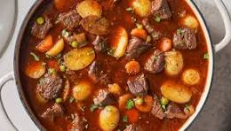

Home
Meat Stew

Description
A meat stew is a hearty and flavorful dish made by simmering chunks of meat (such as beef, lamb, or chicken) with vegetables, herbs, and seasonings in a rich broth.
The slow-cooking process tenderizes the meat and allows the ingredients to meld together, resulting in a savory, comforting meal.
Often enjoyed in colder weather, meat stews are versatile, with variations across different cultures, incorporating different spices, vegetables, and liquids like stock or wine.
The result is a filling and nourishing meal perfect for sharing.
This recipe will utilise the most basic ingredients to prepare the meal.
Ingredients
To prepare a meat stew, you will need the following;
- Half a kilogram of your preferred meat
- 1 onion
- 3 Tomatoes
- Salt
- 3 garlic cloves
- 1 bell pepper
- Coriander
- 2 tablespoon of oil
Steps
- Chop the meat into smaller bits.
- Chop the onions, garlic clovers, tomatoes,bell pepper and the coriander.
- Boil the chopped meat until the meat is brown and tender.
- Once the water is completely evaporated or drawn,add the:
- oil
- chopped onions
- chopped garlic and stir.
- Let the ingredients cook until the maillard reaction occurs or the onions turn slightly brown.
- Once the reaction occurs, add the chopped bell pepper and salt, and stir.
- Let the meal cook for 5 minutes.
- Add the chopped tomatoes and let the tomatoes cook for another 5-7 minutes.
- When the tomatoes seem soggy, add some water depending on the desired broth and stir.
- Finally, add the chopped coriander, stir and let it cook for 5 minutes.
- Serve with your desired accompaniment.